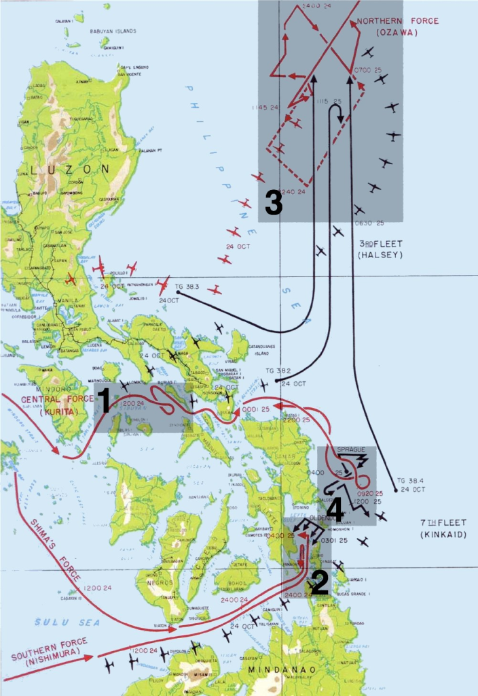

返回主页
莱特湾海战（Battle of Leyte Gulf）

大战菲律宾
By October, 1944, Japan's once-mighty naval power was almost extinguished. But in one last desperate bid, the Japanese gathered and combined their forces to defeat the Pacific Fleet of the United States Navy.
With more ships engaged than there were even in the gargantuan World War I Battle of Jutland-and 200,000 men fighting on the sea and in the air- the Battle of Leyte Gulf was a hellish cacophony of cannon fire, murderous strafing airplanes, and deadly explosions.
Here, in the words of the men who were there, are the dramatic accounts of what really happened at Leyte. Though often overshadowed by other Pacific War engagements, such as Midway or Guadalcanal, the Battle of Leyte Gulf was, and remains, the largest battle in the history of naval warfare.
《经济学人》的钓鱼岛
莱特湾海战（Battle of Leyte Gulf）作战地图（2）
Anyone who has ever looked into the glazed eyes of a soldier dying on the battlefield will think hard before starting a war. Otto von Bismarck
version:1.0; jobnet@188.com © retter2012.com